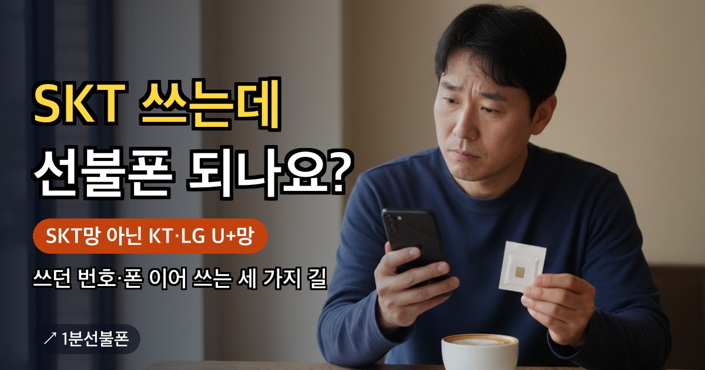

SKT 선불폰을 찾고 있다면 먼저 알아 둘 것이 있습니다. 앤텔레콤 선불폰은 KT망과 LG U+망 두 가지뿐이고, SKT망 상품은 없습니다. 그렇다고 SKT를 쓰던 분이 올 수 없는 것은 아닙니다. 쓰던 번호를 그대로 옮기는 번호이동, 새 번호를 받는 신규가입, 쓰던 휴대폰에 앤텔레콤 유심만 새로 끼우는 방법이 있어서, 세 가지 길을 표로 비교하고 SKT 사용자가 챙길 점을 정리했습니다.
- 앤텔레콤 선불은 KT망·LG U+망 두 가지뿐이고 SKT망 상품은 없음
- SKT 사용자가 가는 길은 세 가지: 번호이동(번호 유지)·신규가입(새 번호)·쓰던 폰에 유심만 끼우기
- 번호이동이면 SKT는 완료 직전 자동 해지, 남은 휴대폰 할부금은 SKT에서 계속 청구
- SKT에서 쓰던 유심은 못 쓰고 앤텔레콤 유심이 필요, 끼운 뒤 전원을 2~3회 이상 껐다 켜기
- 5G 폰으로 5G 요금제를 쓰려면 L망 5G 20GB+, 번호이동 제한은 번호이동 글에서 확인
먼저 밝힙니다, 앤텔레콤 선불은 KT망과 LG U+망뿐입니다
알뜰폰(MVNO)은 SKT·KT·LG U+ 중 이동통신사의 망을 빌려 이통사와 같은 통화품질로 서비스하는 사업자입니다. 앤텔레콤은 그중 KT망과 LG U+망을 빌립니다. 그래서 앤텔레콤에서 개통하는 선불폰은 K망(KT)이나 L망(LG U+) 둘 중 하나이고, SKT망으로 나오는 상품은 없습니다. SK텔레콤 선불폰이나 SKT 선불유심을 찾는 분도 마찬가지이고, 다른 회사가 파는 SKT망 선불은 이 글에서 다루지 않습니다.
그래도 SKT를 쓰던 분이 앤텔레콤으로 올 수는 있습니다. 길은 아래 세 가지입니다.
| 가는 길 | 번호 | 유심과 폰 |
|---|---|---|
| 번호이동 | 쓰던 SKT 번호를 그대로 사용 | 앤텔레콤 유심이 새로 필요, 쓰던 폰에 유심만 끼워도 번호이동 가능 |
| 신규가입 | 새 번호를 부여받음, SKT 번호와는 별개 | 앤텔레콤 유심이 필요, 폰을 새로 사지 않아도 됨 |
| 쓰던 폰에 유심만 끼우기 | 위 두 가지 중 고른 방식을 따름 | SKT 유심은 못 쓰고 앤텔레콤 유심으로 바꿔 끼움 |
세 번째 길은 폰을 어떻게 하느냐의 이야기라서 앞의 두 가지 중 하나와 함께 고르게 됩니다. 번호를 지킬지가 먼저이고, 폰은 그다음입니다.
번호이동하면 SKT에서 생기는 일, 자동 해지와 남은 할부금
번호이동으로 신청하면 SKT 번호를 앤텔레콤 선불폰으로 그대로 가져옵니다. 공식 FAQ 설명대로 SKT 회선은 이동이 마무리되기 직전에 알아서 해지되기 때문에, SKT에 따로 해지를 신청하러 갈 일은 없습니다.
챙길 것은 휴대폰 할부금입니다. SKT에서 산 폰에 할부금이 남아 있다면 번호이동을 한 뒤에도 그 금액은 SKT가 계속 청구합니다. 얼마가 남았는지는 SKT에 확인해 두세요.
번호이동은 신청 시간, 하루 인증 횟수, 최근에 만든 회선 여부에 제한이 붙습니다. 이 제한들을 한곳에 모은 설명은 선불폰 번호이동 글에 있으니 신청 전에 한 번 읽어 보세요.
SKT에 미납이 있어 망설이는 분도 있습니다. 공식 FAQ는 선불이라면 다른 통신사에 미납이 있어도 개통할 수 있다고 답하고, 단 앤텔레콤 자체 미납이 있으면 개통되지 않는다고 합니다. 이 답이 번호이동에도 똑같이 적용되는지는 적혀 있지 않으니, 번호도 지키고 싶다면 번호이동 신청 화면의 안내를 먼저 확인하세요.
SKT에서 쓰던 폰 그대로 쓰기
유심단독 개통은 단말기를 새로 사지 않고 유심만 구해서 쓰던 폰에 끼워 쓰는 방식입니다. 공식 FAQ는 단말기에 문제가 없다면 다른 통신사에서 쓰던 폰도 쓸 수 있다고 답합니다. 큰 순서는 세 단계입니다.
- 앤텔레콤 유심 준비 — SKT에서 쓰던 유심은 앤텔레콤에서 다시 쓸 수 없습니다. K망 바로유심이나 L망 모두의원칩처럼 앤텔레콤 전용 유심을 새로 구합니다.
- 유심 바꿔 끼우기 — 개통을 마친 뒤 폰에 앤텔레콤 유심을 끼우고 전원을 2~3회 이상 껐다 켭니다. 다른 통신사에서 쓰던 폰이라면 1분쯤 여유를 두고 반복하라는 안내가 붙습니다.
- 번호 등록이 안 되면 — 전원을 더 껐다 켜 보고 번호 등록 팝업에서 '예'를 누르는 단계로 이어지는데, 순서 전체는 선불폰 유심 인식 안됨 글에 정리돼 있습니다.
자급제폰이나 서랍 속 예전 폰에 넣어 보려는 분은 공기계 개통 글도 함께 보세요.
KT망과 LG U+망 중 어느 쪽으로 갈까요
어느 망이 더 맞는지는 FAQ에 정해진 답이 없고, 유심 구매처와 쓰려는 요금제로 고르는 것이 정확합니다.
| 망 | 유심 | 구매처 | 포장 |
|---|---|---|---|
| KT(K망) | 바로유심 | CU · GS25 · 이마트24 | 민트색 |
| LG U+(L망) | 모두의원칩 | 이마트24 · B마트 · 지하철 역 자판기, CU·GS25에는 없음 | 검은색 |
5G 폰으로 5G 요금제를 쓰고 싶다면 안내된 요금제 기준으로 L망의 5G 선불 20GB+(월 46,400원)가 해당합니다. 5G 폰이어야 하고 이용 조건도 있으니 신청 화면에서 내 기종을 확인하세요. 두 망의 비교는 선불유심 추천 글에 있습니다. 드는 돈은 편의점 기준 유심값 6,600~8,800원에 월 요금제가 더해지고, 요금제는 12,100원짜리부터 고를 수 있습니다. 유심이 준비되어 있으면 개통까지 5분이면 끝납니다.
셀프 개통 전에 정할 것과 개통 뒤에 할 일
SKT 사용자라면 신청 화면을 열기 전에 아래 세 가지를 정해 두세요.
- 번호를 지킬지 — 지킬 거라면 번호이동, 새 번호로 충분하다면 신규가입을 고릅니다.
- 어느 망의 유심을 구할지 — 위 표에서 구매처가 가까운 쪽이나 요금제가 맞는 쪽을 고릅니다.
- 신청 시간 — 신규가입은 08:00~21:50, 번호이동은 10:00~19:50 사이에 셀프개통을 마칠 수 있어야 하고, 번호이동은 일요일과 신정·설·추석 당일에는 안 됩니다.
웹 신청은 본인 명의 간편인증서(토스·카카오 등)와 안면인증을 거치고, 2026년 10월부터는 안면인증을 반드시 통과해야 개통할 수 있습니다. 형광등 빛이 반사되지 않도록 하고, 고개를 돌릴 때 눈도 고개와 함께 돌려야 인식이 잘 됩니다. 웹으로 직접 개통했다면 뒤이어 걸려 오는 확인 전화(해피콜)를 놓치지 마세요. 놓치면 번호가 해지될 수 있으니 주의하세요. 전체 순서는 개통 방법에서, 방문 개통은 센터 찾기에서 확인하세요.
자주 묻는 질문
앤텔레콤에 SKT망 선불폰이 있나요?
없습니다. 앤텔레콤은 KT망과 LG U+망을 빌려 서비스하므로 선불폰도 K망과 L망 두 가지입니다. SKT에서 쓰던 번호는 번호이동으로, 쓰던 폰은 단말기에 문제가 없다면 유심만 바꿔 끼워 이어 쓸 수 있습니다.
SKT 휴대폰 할부금이 남아 있으면 번호이동 뒤에 어떻게 되나요?
남은 할부금은 번호이동을 한 뒤에도 SKT에서 계속 청구된다고 공식 FAQ가 안내합니다. 얼마가 남았는지는 SKT에 확인해 두세요.
SKT 요금이 밀려 있어도 새 번호를 받을 수 있나요?
공식 FAQ는 선불이라면 다른 통신사에 미납이 있어도 개통할 수 있다고 안내합니다. 다만 앤텔레콤 자체 미납이 있으면 개통되지 않습니다. 이 답이 번호이동에도 똑같이 적용되는지는 FAQ에 없으니, 번호를 지키려면 신청 화면의 안내를 확인하세요.
같이 보면 좋은 글

선불폰 번호이동 — 쓰던 번호 유지하는 방법과 시간·횟수·회선 제한
쓰던 번호를 바꾸기 싫어서 선불폰 이동을 망설이고 있다면 번호이동이 답입니다. 번호이동으로 신청하면 지금…

선불유심 추천 — KT망·LG망 차이와 고르는 기준
선불유심 추천을 검색하는 이유는 대부분 '선불폰을 어디서 개통해야 하나'라는 질문 때문입니다. 답은 순위가…
공기계 개통, 유심만 있으면 자급제폰도 5분이면 번호가 생깁니다
자급제로 산 새 스마트폰이든, 서랍에서 꺼낸 예전 갤럭시나 아이폰이든 통신사에 물려 있지 않은 기기라면…
번호 유지 요금제, 통화 안 해도 번호만 남기는 법
번호 유지 요금제를 찾는다면 통화·데이터가 많이 필요한 게 아니라 번호 자체를 잃지 않는 게 목적일…
최종 업데이트: